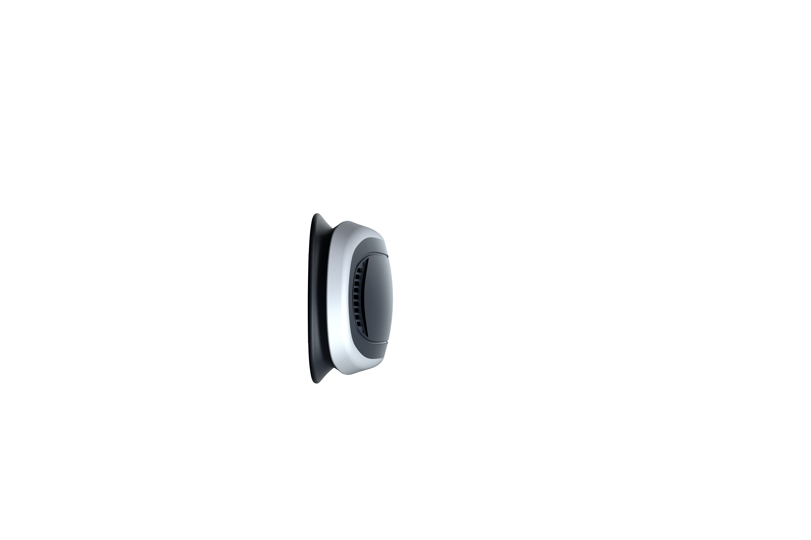
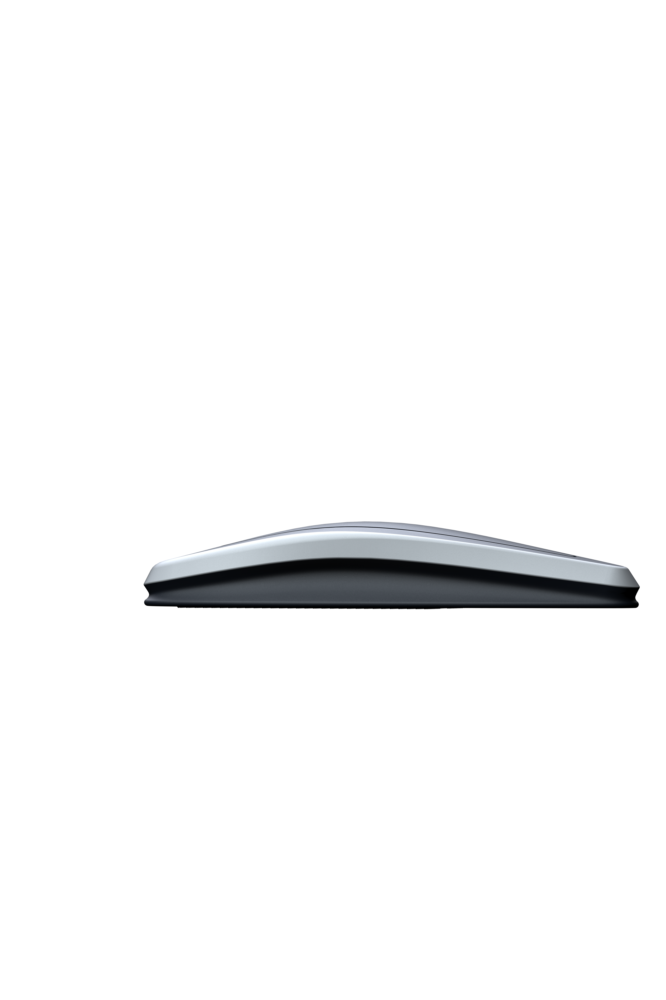

The Ocean Crisis
海洋危机
Every 60 seconds, a garbage truck of plastic enters our oceans. By 2050, plastic could outweigh all fish.
Marine ecosystems are collapsing — but real-time monitoring gives us the power to fight back.
2,000 garbage trucks per day
+ 1 million seabirds
Without intervention
The Plastic Plague
塑料瘟疫82% of ocean waste is plastic
Over 80% of marine debris consists of plastics — bags, bottles, fishing nets, microbeads. An estimated 5.25 trillion plastic particles float in our oceans.
Microplastics are everywhere
Found in the Mariana Trench (11km deep), Arctic ice cores, and 100% of marine species tested. Each week, humans ingest ~5g of microplastics — equivalent to eating a credit card.
Great Pacific Garbage Patch
A floating plastic mass 3x the size of France — 1.6 million km² containing an estimated 1.8 trillion plastic pieces. It grows larger every year.


Coral Reefs Dying
珊瑚白化危机85% Caribbean coral lost
Since the 1970s, Caribbean live coral cover has dropped from ~50% to less than 8%. The Indo-Pacific has lost ~50% of coral cover in the same period.
Mass bleaching accelerating
The Great Barrier Reef suffered 5 major bleaching events since 2016. At +1.5°C warming, 70-90% of warm-water coral reefs will disappear. At +2°C, >99% will be lost.
25% of all marine life depends on reefs
Coral reefs support ~25% of marine biodiversity despite covering less than 1% of the ocean floor. 500+ million people rely on reefs for food, income, and coastal protection.
Overfishing & Bycatch
过度捕捞与兼捕34% of global fish stocks overexploited
Up from 10% in 1974. 90% of large predatory fish (tuna, swordfish, sharks) have been wiped out. Industrial fleets can catch 400,000 kg of fish in a single haul.
Bycatch: the hidden massacre
~40% of global catch is bycatch — 38 million tonnes annually. Dolphins, turtles, sharks, and seabirds are caught and discarded as waste. 80,000 dolphins die in Indian Ocean gillnets each year.
Ghost gear: the silent killer
640,000 tonnes of abandoned fishing gear enters oceans annually. Ghost nets drift for decades, entangling and killing ~136,000 seals, whales, and turtles every year.
8.21950
8.152025
8.052100*
7.85
The Acid Threat
海洋酸化30% more acidic since industrial revolution
Oceans absorb ~25% of all CO₂ emissions. This triggers a chemical reaction producing carbonic acid. Ocean acidity has increased at a rate 100x faster than any period in the last 55 million years.
Shellfish and coral dissolution
Acidic water dissolves calcium carbonate — the building block of shells, skeletons, and coral reefs. Oyster larvae in the Pacific Northwest have experienced massive die-offs. Pteropods (sea butterflies) — base of many food chains — show shell dissolution.
$1 trillion annual economic risk by 2100
Coral reef degradation alone could cost $500 billion/year in lost tourism, fisheries, and coastal protection. Shellfish industry losses projected at $100+ billion annually.
The Silent Extinction
无声的灭绝Vaquita
Phocoena sinusThe world's most endangered marine mammal. Killed by illegal gillnets in Mexico's Gulf of California. 98% decline in 30 years.
N. Atlantic Right Whale
Eubalaena glacialisCritically endangered. Ship strikes and fishing gear entanglements are primary threats. Fewer than 70 breeding females left.
Hawksbill Turtle
Eretmochelys imbricataPoached for their beautiful shells (tortoiseshell trade). Climate change affects nesting beaches. Caribbean population collapsed 99%.
Oceanic Whitetip
Carcharhinus longimanusOnce the most abundant pelagic shark. Decimated by the shark fin trade and bycatch. 70% global decline since the 1950s.
Bluefin Tuna
Thunnus thynnusOverfishing for sushi markets. A single fish sold for $3.1M in Tokyo. Western Atlantic stock: 82% decline since 1970.
Hope on the Horizon
希望的曙光While the challenges are immense, technology, policy, and collective action are making a difference. Monitoring is the first step to protection.
Marine Protected Areas
9% of oceans now protected. The UN 30x30 treaty aims to protect 30% by 2030. Well-managed MPAs show 400%+ biomass recovery.
AI & Satellite Monitoring
AI-powered satellite imagery detects illegal fishing vessels in real-time. Drones map plastic pollution. Machine learning predicts bleaching events weeks in advance.
Plastic Treaty & Bans
170+ nations negotiating a Global Plastics Treaty. NSW achieved 45% plastic litter reduction through single-use bans. Ocean cleanup removes 15,000 kg/day.
Knowledge Is the First Step to Action
Ocean Guardian's network of 40+ monitoring stations provides the critical data scientists, governments, and conservation groups need — from real-time pollution tracking to early warning systems for coral bleaching and illegal fishing.
蔚蓝守护的40+监测站为科学家、政府和保护组织提供关键的实时数据。 Explore Our Technology 了解技术Ocean Monitoring Infrastructure
海洋监测基础设施Click any facility to view regional map and pollution status
点击设施查看区域地图与污染状况South China Sea
南海监测站 · SCS-07Pacific Ocean
太平洋监测站 · PAC-03Atlantic Ocean
大西洋监测站 · ATL-12Indian Ocean
印度洋监测站 · IND-05Arctic
北冰洋监测站 · ARC-01Mediterranean
地中海监测站 · MED-08South China Sea · 南海
16.5°N, 114.3°EPollution & Water Quality 污染与水质
Whale-mounted Monitoring System
鲸鱼搭载监测设备展示海洋监测设备三视图 + 鲸鱼佩戴实拍展示



- ◆ 降低高度设计：65mm，有效减少水阻
- ◆ 流线型外观：优化流体动力学
- ◆ 底部吸盘结构：稳固吸附于安装表面
- ◆ 紧凑尺寸：300 × 80 × 65mm（长×宽×高）
Food Chain Pollution Transfer Model
食物链污染传递计算模型Based on biomagnification research: PCB/Hg trophic transfer from plankton to apex predator Orcinus orca. Data sourced from Andvik et al. (2020), Alava et al. (2012), Remili et al. (2023).
流宽 ∝ log[PCB浓度]
Ratio of contaminant concentration in predator tissue to prey tissue at steady state. BMF > 1 indicates biomagnification.
where m = slope of log[C] vs TL
PCB TMF ≈ 3.5–5.0 in North Atlantic food webs (Fagerlund 2024). Each trophic step multiplies concentration ~5–10×.
All seal-eating individuals exceed PCB toxicity thresholds (17 µg/g for reproductive impairment, 41 µg/g for immune suppression). Source: Andvik et al. 2020, Scientific Reports.
Orca-mounted Deployment
鲸鱼佩戴展示Ocean Data Pipeline
海洋数据管线From sensor acquisition to response deployment, fully automated processing
从传感器采集到响应部署，全链路自动化处理Signal Intake 信号采集
Sensor Data AcquisitionCache Alignment 数据同步
Node SynchronizationDistributed Analysis 智能分析
AI Model InferenceAlert Compilation 预警编译
Multi-format OutputResponse Deployment 响应部署
Automated ExecutionReal-time Telemetry Dashboard
实时遥测监控Full-dimensional ocean situational awareness console
全维度海洋态势感知仪表盘Global Monitoring Network
全球监测网络40+ ocean monitoring stations — click any station to zoom to its location
点击左侧站点，3D地球将飞抵对应坐标Advanced Monitoring Architecture
高级监测架构Deep integration of distributed edge computing and vector storage
分布式边缘计算与向量存储的深度融合Edge Inference Nodes 边缘推理节点
Distributed edge computing network for localized real-time inference and alerts
Vector Storage 向量存储
High-dimensional ocean data vectorized storage and retrieval
Military-grade Data Isolation
军事级数据隔离Multi-layer security ensuring absolute ocean data safety
多层安全防护确保海洋数据绝对安全Physical Isolation 物理隔离
Monitoring clusters fully air-gapped from public internet, accessible only via authenticated VPN tunnels.
Autonomous Encryption 自主加密
NVMe storage with AES-256 encryption at rest, TLS 1.3 in transit.
Biometric Auth 生物认证
Data centers require minimum 5-point biometric verification for physical engineering access.
Bare Metal API
裸金属APIDeploy your ocean monitoring model in three lines of code
三行代码部署你的海洋监测模型Native Python SDK 原生Python SDK
Type-safe, async-first Python client with full IDE support
Terraform Provider 基础设施即代码
Infrastructure as code, version-controlled station configuration
Direct Sensor Interface 直连传感器
Bypass middleware for direct sensor data stream access, zero additional latency
Trusted Partners
受信赖的合作伙伴Recognition from the global ocean conservation community
来自全球海洋保护领域的认可"Ocean Guardian has completely transformed how we monitor the oceans. The physical control over infrastructure is unparalleled."
"The edge routing latency is incredible. Our global response time dropped by 40% within one week of deployment."
"Seamless integration into our CI/CD pipeline. Auto-scaling handled a sudden pollution event with zero human intervention."
Service Plans
服务方案Flexible billing, choose as needed
灵活的计费模式，按需选择Shared Monitoring 共享监测
For small research teams 适合中小型研究团队
Multi-tenant sensor sharing 多租户传感器共享 100GB data cache 100GB数据缓存 Standard network SLA 标准网络SLA
Dedicated Monitoring 专属监测
For large institutions & enterprises 适合大型研究机构与企业
Exclusive sensor array 独占传感器阵列 TB-level local cache TB级本地缓存 Secure isolated processing 安全隔离处理